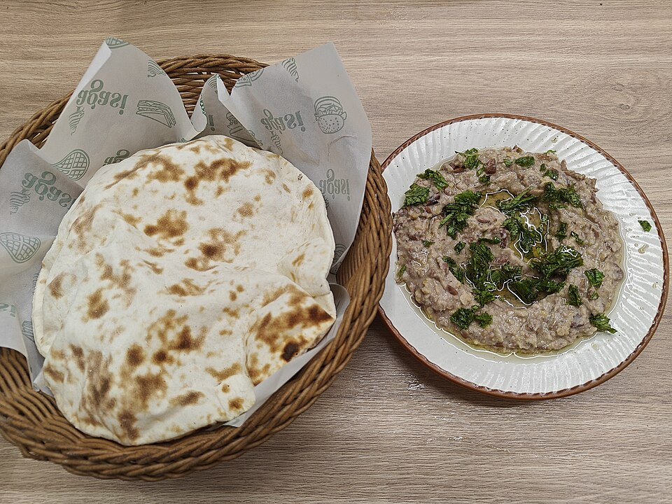

Salgados · Massas fritas/assadas
Pão sírio

Ingredientes
- 6 xícaras de farinha de trigo
- 1 tablete (15 g) de fermento para pão
- 2 xícaras de água morna
- 1½ colher (chá) de sal
- 1 colher (chá) de açúcar
- 2 colheres (sopa) de óleo
- farinha de trigo para polvilhar
- óleo para untar
Modo de preparo
- Preaqueça o forno em temperatura baixa (100 °C). Peneire a farinha numa tigela grande e deixe aquecendo no forno.
- Dissolva o fermento em ¼ xícara de água morna. Junte o restante da água, sal e açúcar.
- Retire a farinha do forno. Reserve 2 xícaras. Faça cova na farinha restante, adicione o fermento e mexa até formar pasta. Cubra e deixe espumar.
- Acrescente a farinha reservada e o óleo gradualmente; bata bem por 10 minutos.
- Sobre superfície polvilhada, amasse 10 minutos até lisa por dentro e levemente enrugada por fora.
- Forme bola, unte com óleo, cubra com plástico e deixe crescer 1 hora em lugar protegido.
- Abaixe a massa, amasse 1 minuto e forme 10 bolas iguais.
- Abra cada bola em disco de 20 cm sobre pano polvilhado. Cubra e descanse 20 minutos. Preaqueça forno médio (200 °C).
- Unte assadeira com óleo e aqueça na parte superior do forno. Asse um pão por vez 4 a 5 minutos até incharem. Enrole em pano limpo para manter macios.
Observação
Rendimento: 10 pães. Fermento biológico fresco pode ser congelado em papel alumínio (3 meses). Congelamento: embrulhe em filme, congele, depois saco sem ar. Descongelamento: 1 hora em temperatura ambiente.